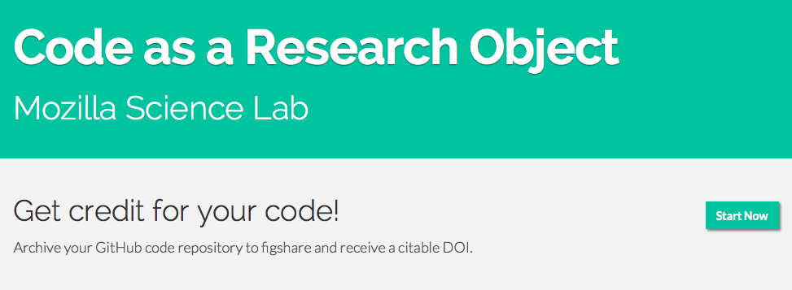
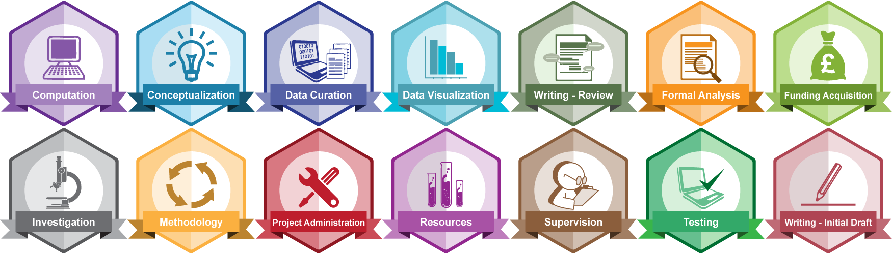

Software Credit
What we've done at the Mozilla Science Lab
abbycabs.hello();
I work for the Mozilla Foundation where I'm the
lead developer for the Mozilla Science Lab.
I want to use the web to move science forward.
abbycabs.history();
lead developer for WormBase,
Ontario Institute for Cancer Research
bioinformatic research specialist, Michigan State University

Building a better Internet: promoting openness, innovation & opportunity on the Web.

Helping researchers leverage the open web.
openness
→participation
→collaboration
openness
→participation
→collaboration
{
on the web
openness
→participation
→collaboration
(understanding software is an onramp to leveraging the web)
Helping researchers leverage the open web.
We facilitate learning around open source and data sharing, and empower others to lead in their communities.
- Code as a Research Object 
- Contributorship Badges 
Code as a Research Object
- Code as a Research Object (fidgit)
- CodeMeta
- Software Discovery Dashboard
Code as a Research Object v1

CodeMeta
CodeMeta focuses on metadata and discovery systems for software citation and attribution.

Software Discovery Dashboard
RIT senior project
http://mozillascience.github.io/software-discovery-dashboard/
Contributorship Badges

Project CRediT: Contributor Roles Taxonomy
- Conceptualization
- Data curation
- Formal analysis
- Funding acquisition
- Investigation
- Methodology
- Project administration
- Resources
- Software
- Supervision
- Validation
- Visualization
- Writing – original draft
- Writing – review & editing
The Mozilla Festival 2014

Scientific Software: Credit for your Code
A work in progress.
Join us!
Acknowledgements
Arfon Smith, Matt Jones, Mark Hahnel, Lars Holm Nielsen, Amye Kenall, Laura Paglione, Brian Hole, Austin Davis-Richardson, Ai Deng, Robert Peters, Garth Henson, Anita Perala, Ali Al Dallal, Will Simpson, Alister Cole, Adam Blaine, Matt Mokary, Stefan Neamtu, Luke Coy + many more
(+ the Mozilla Science Lab! Kaitlin Thaney, Arliss Collins, Zannah Marsh, Steph Wright)